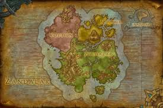

Novedades
Nuevas Zonas


Kul Tiras
Tiempo después de la tercera invasión de la Legión Ardiente, la Alianza llega a la isla en busca de la poderosa armada de Kul Tiras para que les ayude en su nueva guerra contra la Horda. Kul Tiras está formado por varias casas. Aunque se unificaron bajo el mando de Daelin Valiente, la situación cambió tras su derrota en Theramore. Ahora la Lady Almirante Katherine Valiente gobierna en su lugar y está al mando del ejército y de la guardia. Aunque se intente mantener el orden, en Kul Tiras no dejan de aumentar el crimen, la corrupción y la piratería. La gente está perdiendo la fe en el almirantazgo de los Valiente. Al oeste está Drustvar, una región montañosa de la que provienen muchos minerales del reino... y los guerreros más fieros. La Casa Crestavía ha sido leal a los Valiente durante siglos, pero últimamente no asisten a las reuniones del consejo y empiezan a correr rumores inquietantes. En el Valle Canto Tormenta, al norte, los sabiomar de la Casa Canto Tormenta, fabrican y bendicen los barcos de su legendaria flota. Pero hace meses que nadie sabe nada de la flota. Los sabiomar se han retirado a sus claustros y no parecen estar interesados en encontrar los barcos desaparecidos. Las casas deberán unirse bajo el estandarte de los Valiente y encontrar la flota perdida. De lo contrario, Kul Tiras podría hundirse incluso antes de la guerra.
Zandalar
Zandalar es una isla y subcontinente localizado en los Mares del Sur donde tienen su hogar los Zandalari, a pesar de que en su momento fue la cuna de todas las civilizaciones trol de Azeroth. Originalmente era una zona inaccesible situada en el supercontinente de Kalimdor, pero tras el Gran Cataclismo que sucedió a la Guerra de los Ancestros, se convirtió en una masa insular independiente, alterando así el devenir de la sociedad Zandalari. Aún habiendo sufrido tamaña transformación con la destrucción de Kalimdor, Zandalar continuó siendo el centro del Imperio Zandalari, quien trató de mantener su hegemónica posición histórica sobre el resto de asuntos concernientes a los trol.
Nuevas Razas

Trols Zandalari
Los Zandalari son un pueblo orgulloso cuyos orígenes se remontan a los primeros días de la historia de Azeroth. Sus fieros guerreros cabalgan a lomos de dinosaurios en la batalla y poseen una de las flotas más formidables del mundo conocido, pero una serie de ataques enemigos en sus fronteras y la discordia en el seno del consejo real han han hecho tambalear los cimientos del reino. Si consiguen devolverle la estabilidad, los héroes de la Horda podrían conseguir un nuevo y poderoso aliado.
Elfos Nocheterna
Aislados tras una barrera protectora durante 10 000 años, los elfos de Suramar se volvieron cada vez más dependientes de la magia Arcana de la Fuente de la Noche. Para proteger este pozo de poder, los líderes de los Nocheterna llegaron a un acuerdo con la Legión Ardiente, lo que empujó a su reino a una guerra civil. Tras luchar para liberarse de sus amos demoníacos, los Nocheterna buscan aliados en la Horda para reclamar su lugar en el mundo.
Kultiranos
El reino de Kul Tiras fue fundado por unos intrépidos exploradores que zarparon hacia tierras desconocidas en busca de aventuras. Como miembro clave de la Alianza de Lordaeron, Kul Tiras dominó los mares de Azeroth gracias a su legendaria armada. Tras años de agitación y penurias, el reino se aisló y se volvió vulnerable a influencias oscuras. Gracias a la ayuda de atrevidos héroes, la casa Valiente ha resurgido y Kul Tiras está preparado para luchar junto a la valerosa Alianza una vez más.
Elfos del Vacio
Muchos han deseado canalizar la magia corruptora del Vacío. La mayoría de los que lo han intentado han terminado arrastrados a la locura. Decidida a usar este poder por el bien de Azeroth, Alleria Brisaveloz es la primera mortal que consigue desafiar los susurros de las Sombras. Alleria, quien acudió en ayuda de un grupo de elfos del Vacío que casi ceden a la oscuridad, ha jurado entrenarlos para que controlen las sombras de su interior y utilicen sus recién adquiridos poderes por el bien de la Alianza.